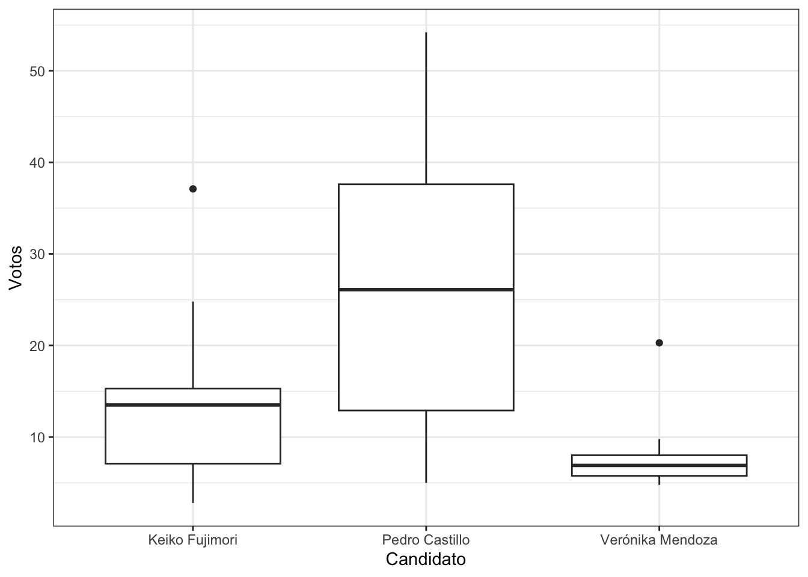
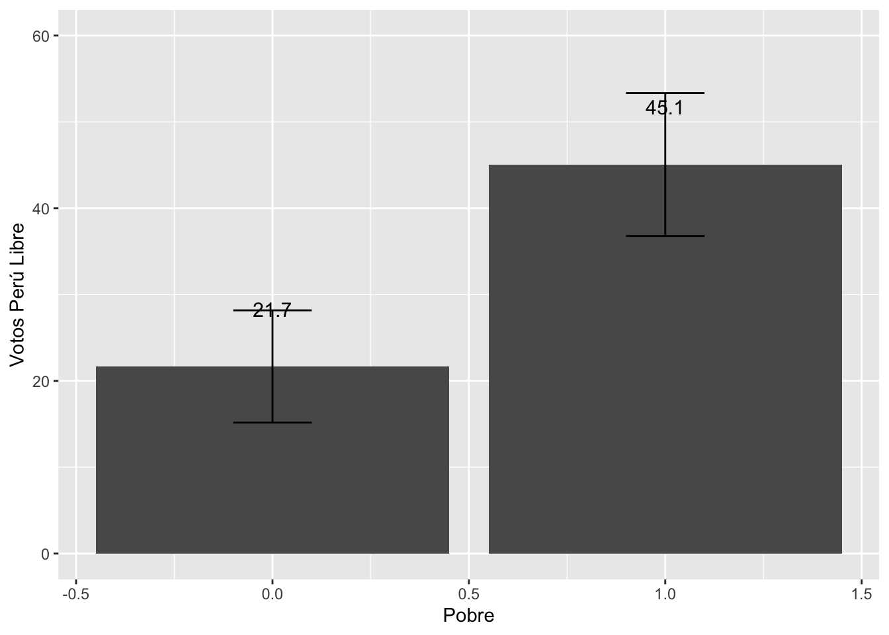
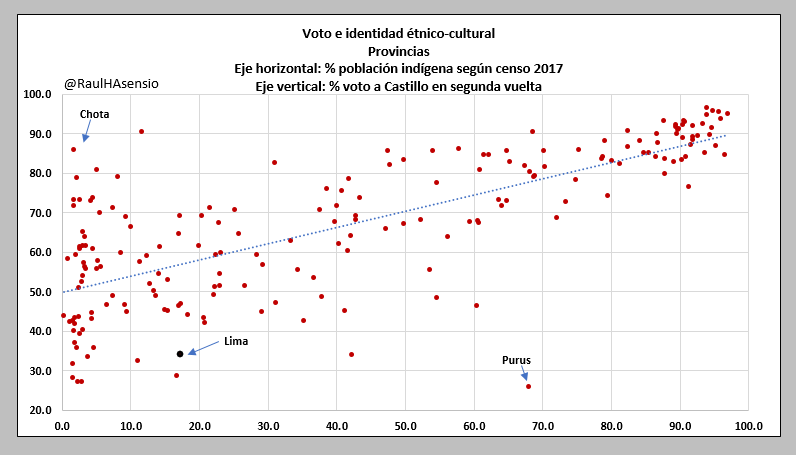

Clase 14
Arturo Maldonado
26/6/2023
Repaso
Buscando y cargando datos
Abrir la base de datos de las elecciones 2021 a nivel departamental en Excel.
Buscar la información acerca de autoidentificación étnica y agregar las columnas para el porcentaje de personas que se autoidentifica como población indígena u originaria
Agregar otra columna para el porcentaje de personas que se autoidentifica como “afro”.
Agregar otra columna para el porcentaje de ciudadanos que votaron por otro candidato(a) diferente a Pedro Castillo o Keiko Fujimori.
Este nuevo archivo Excel cárguenlo en RStudio.
library(rio)
data = import("bases/voto2021_v2.xlsx")Manipulando datos
- Calcular el porcentaje total de personas que se autoidentifican con algún grupo étnico (suma de % de población indígena u originaria + % de personas afro)
library(dplyr)
library(tidyverse)
data = data |>
mutate(etnico = afro + indigena)Descriptivos
tabla1 = data |>
summarise(minimo = min(etnico), media = mean(etnico),
mediana = median(etnico),
maximo = max(etnico), desviacion = sd(etnico))
tabla1## minimo media mediana maximo desviacion
## 1 1.05 8.0028 5.66 49.14 9.572934Comparar los descriptivos de las variables del voto a los(as) 3 candidatos(as).
tabla2 = data |>
summarise(media = mean(VotoPL_1), mediana = median(VotoPL_1),desviacion = sd(VotoPL_1))
tabla2## media mediana desviacion
## 1 27.284 26.1 15.92487tabla3 = data |>
summarise(media = mean(VotoFP_1), mediana = median(VotoFP_1),desviacion = sd(VotoFP_1))
tabla3## media mediana desviacion
## 1 13.172 13.5 7.628047tabla4 = data |>
summarise(media = mean(VotoVM_1), mediana = median(VotoVM_1),desviacion = sd(VotoVM_1))
tabla4## media mediana desviacion
## 1 7.4672 6.9 2.98721Graficar descriptivamente mediante un gráfico de cajas.
data2 = dplyr::select(data, 2:4)
data_larga = gather(data2, variable, valor)graf1 = ggplot(data_larga, aes(x=variable, y=valor))+
geom_boxplot()+
ylab("Votos")+
xlab("Candidato")+
scale_x_discrete(labels = c("Keiko Fujimori", "Pedro Castillo", "Verónika Mendoza"))+
theme_bw()
graf1
Inferencia
Comparar IC entre grupos:
- Voto a un candidato entre 2 grupos de pobreza
data = data |>
mutate(pobre = ifelse(Pobreza2020 > 34.6, 1, 0))Voto a PC entre grupos de etnicidad
Comparar gráficamente IC de un candidato versus el otro
library(lsr)
PLxpobre = data |>
group_by(pobre) |>
summarise(Media = mean(VotoPL_1, na.rm=T),
lim.inf = ciMean(VotoPL_1, na.rm=T)[1],
lim.sup = ciMean(VotoPL_1, na.rm=T)[2]
)
PLxpobre## # A tibble: 2 × 4
## pobre Media lim.inf lim.sup
## <dbl> <dbl> <dbl> <dbl>
## 1 0 21.7 15.2 28.2
## 2 1 45.1 36.8 53.3- Graficar alguna de estas comparaciones
graf2 = ggplot(PLxpobre, aes(x=pobre, y=Media))+
geom_bar(stat="identity")+
geom_errorbar(aes(ymin=lim.inf, ymax=lim.sup), width=0.2)+
geom_text(aes(label=paste(round(Media, 1))), vjust=-3.5, size=4)+
xlab("Pobre") + ylab("Votos Perú Libre")+
ylim(0, 60)
graf2
Pruebas de significancia
Correr pruebas:
- Realizar una prueba para poner a prueba la comparación entre grupos
library(DescTools)
LeveneTest(data$VotoPL_1, data$pobre)## Warning in LeveneTest.default(data$VotoPL_1, data$pobre): data$pobre coerced to
## factor.## Levene's Test for Homogeneity of Variance (center = median)
## Df F value Pr(>F)
## group 1 2.5433 0.1244
## 23t.test(data$VotoPL_1~data$pobre, var.equal=T)##
## Two Sample t-test
##
## data: data$VotoPL_1 by data$pobre
## t = -3.9993, df = 23, p-value = 0.0005635
## alternative hypothesis: true difference in means between group 0 and group 1 is not equal to 0
## 95 percent confidence interval:
## -35.50104 -11.29545
## sample estimates:
## mean in group 0 mean in group 1
## 21.66842 45.06667#anova = aov()
#summary(anova)Correlación

Presentar gráfico de dispersión del voto a candidato PC por etnicidad
Presentar gráfico de dispersión del voto a PC por otra variable
Presentar gráfico de dispersión del voto a otro candidato(a) por variable de interés
ggplot(data, aes(x=indigena, y=VotoPL_1))+
geom_point()+
geom_smooth(method=lm, se=F)+ #agregar línea de tendencia
geom_text(data=data, aes(label=Departamento),
cex=2, nudge_y = 1.1, check_overlap = T)+ #Pata etiquetar los puntos, darles un tamaño, ubicación y prevenir que se sobrepongan
labs(x="Porcentaje de personas que se autoidentifican como indígena",
y="Voto a PL (1era vuelta 2021)")+ #para etiquetar los ejes
theme_light()## `geom_smooth()` using formula = 'y ~ x'
Regresión lineal simple
- Realizar un modelo de alguno de los gráficos de dispersión
modelo1 = lm(data$VotoPL_1 ~ data$indigena)
summary(modelo1)##
## Call:
## lm(formula = data$VotoPL_1 ~ data$indigena)
##
## Residuals:
## Min 1Q Median 3Q Max
## -28.0887 -12.8438 0.3376 10.3073 27.0980
##
## Coefficients:
## Estimate Std. Error t value Pr(>|t|)
## (Intercept) 25.4228 4.0579 6.265 2.16e-06 ***
## data$indigena 0.4651 0.6190 0.751 0.46
## ---
## Signif. codes: 0 '***' 0.001 '**' 0.01 '*' 0.05 '.' 0.1 ' ' 1
##
## Residual standard error: 16.07 on 23 degrees of freedom
## Multiple R-squared: 0.02396, Adjusted R-squared: -0.01848
## F-statistic: 0.5646 on 1 and 23 DF, p-value: 0.46Regresión lineal múltiple
- Seguir con el modelo simple, ahora introduciendo controles
modelo2 = lm(data$VotoPL_1 ~ data$indigena + data$Pobreza2020 + data$Analfabetismo)
summary(modelo2)##
## Call:
## lm(formula = data$VotoPL_1 ~ data$indigena + data$Pobreza2020 +
## data$Analfabetismo)
##
## Residuals:
## Min 1Q Median 3Q Max
## -18.968 -7.633 -2.819 10.883 18.413
##
## Coefficients:
## Estimate Std. Error t value Pr(>|t|)
## (Intercept) 11.2650 8.1400 1.384 0.18092
## data$indigena 0.4194 0.4690 0.894 0.38133
## data$Pobreza2020 -0.3222 0.3317 -0.971 0.34245
## data$Analfabetismo 3.6346 0.9452 3.845 0.00094 ***
## ---
## Signif. codes: 0 '***' 0.001 '**' 0.01 '*' 0.05 '.' 0.1 ' ' 1
##
## Residual standard error: 11.99 on 21 degrees of freedom
## Multiple R-squared: 0.5043, Adjusted R-squared: 0.4335
## F-statistic: 7.123 on 3 and 21 DF, p-value: 0.001764Hacia el próximo ciclo1
El método de regresión lineal multivariado debe cumplir unos requisitos que no se verán en este curso. Estos requisitos son:
Linealidad: que la relación entre las variables sea lineal.
Multicolinealidad: los predictores no deben “medir” el mismo concepto. Es decir, variables independientes no deben tener una alta correlación.
Heterocedasticidad: los errores deben ser aleatorios y no ser sistemáticos. Si los errores tiene una relación sistemática con los valores de la variable dependiente, se habla de heterocedasticidad.
Autocorrelación: en particular cuando se trabaja con una variable temporal. Se dice que hay autocorrelación cuando el valor en t+1 depende del valor de t.
Estos requisitos se verán en el curso de Estadística 2.
Otro tema que se verá en el siguiente curso es el modelo que se usa cuando la variable dependiente no es una numérica, sino una variable dicotómica. Cuando tenemos esta variable dependiente se usa un modelo de regresión logística.
Resumen
En esta sección presentamos un mapa de temas que hemos visto a lo largo de todo el semestre. Como se ve en el esquema, las herramientas que hemos visto en el curso dependen de un punto de partida inicial, que es la distinción entre tipos de variables: cualitativas o categóricas y cuantitativas o numéricas. Dependiendo de esta categorización, se desprende el tipo de análisis descriptivo, tanto de la tendencia central, como de la dispersión, así como las formas de graficar estas variables.
Como paso previo a la inferencia, se construyeron intervalos de confianza de la media (variables cuantitavitas) o de proporciones (variables cualitativas). Se analizó que se podían construir intervalos de confianza de medias o proporciones para grupos. Este es el primer paso de la inferencia. Se evaluó si los intervalos de confianza se traslapaban o no. Esto daba paso al análisis bivariado en la segunda parte del curso.

En el libro de Ritchey se muestra este árbol de decisión. La rama derecha de “Dos muestras o dos variables” muestra el resumen de la segunda parte de este curso. Esta segunda parte ha estado dedicada a la inferencia en el análisis bivariado. Como hemos avanzado en este curso, se ha presentado la prueba de inferencia t, la prueba F de ANOVA, la prueba de chi-cuadrado y la regresión bivariada. Luego, se dio el paso al análisis multivariado.

Finalmente, el objetivo de este curso es presentar herramientas iniciales para el análisis de datos sociales. Se espera que luego de este curso los alumnos sean consumidores o productores capaces de estadística. Como consumidores, los alumnos van a estar expuestos a literatura especializada que use métodos estadísticos. Las herramientas vistas en este curso permitirían que los alumnos puedan evaluar estos artículos y los hallazgos de manera crítica.
Como productores, se espera que los alumnos utilicen evidencia numérica y análisis estadístico en sus trabajos de cursos y en sus tesis de pregrado. Ya sea para presentar análisis descriptivo o para realizar análisis inferencial, los alumnos deberían estar en la capacidad de recoger datos numéricos y trabajar con estos usando técnicas vistas en este curso. Es completamente válido que los alumnos usen otros métodos, por ejemplo cualitativos, pero si este curso y el siguiente logran que algunos de ustedes se “atrevan” a usar métodos cuantitativos, ese será el mayor logro de este curso. Gracias!!!
Si aprueban↩︎